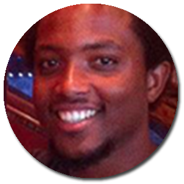
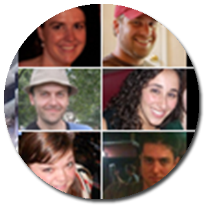

Click on a face to learn more!
 Close
Officiant
It was a Mika concert on October 16th, 2009 that solidified the friendship between Ashley and Amanda. The two drove up to New York City, saw the concert and drove back all in one night. It was an evening full of squeals, ukulele sing-alongs and intense bonding.
When Caleb came into the picture, he was somewhat of a complicatition to the completely merged lives of Ashley and Amanda. However his charm and persistance won Ashley over and the two developed a close relationship based on post-party brunches and political debates.
Ashley has been an enormous part of the relationship between Caleb and Amanda. She has been a patient ear, an encouraging voice and a mediator of crazy behavior. Her selflessness and enthusiasm for life make her Caleb and Amanda's favorite right-hand-lady and the perfect choice for their officiant.
Close
Maid of Honor
Kate is Amanda's older and wiser sister. She is her best friend and her "Barbie." Kate and Amanda have been loving, fighting, crying and laughing for 28 years and they never plan to stop.
Thanks to Kate, Amanda is a Trekkie. Thanks to Kate, Amanda loves Shakespeare. Thanks to Kate, Amanda is forever obsessed with Frank from "Seven Brides for Seven Brothers." Thanks to Kate, Amanda has the best brother-in-law and niece a girl could ask for.
Kate will undoubtedly be the greatest maid of honor ever. She is fabulous at party planning and creating unique and personalized games. Her own wedding continues to be one of Amanda's biggest inspirations in terms of planning.
If Amanda smashes cake in Caleb's face on the big day, Kate will disown her forever.
Close
Best Man
It isn't surprising that the love between Caleb and Evan originated on Craigslist. The two first found each other when Evan's band advertised their need for a guitar player. Caleb auditioned, Caleb joined the band, Caleb found his soulmate.
Caleb and Evan share a love of music and a love of hockey. They feed off each other's energy and are always a sight to behold whether on stage, on the ice or merely at a party. They have worked together on several projects - anyone out there remember 'The Cortland Fiasco?' - and they are always learning from one another as they navigate through their various interests.
As Ashley is Amanda's platonic "other half," so is Evan to Caleb. Caleb and Amanda do not approve of these important people no longer living down the street.
Close
Bridesmaid
Amanda and Emily are highschool friends who weren't actually friends in highschool. They started hanging out through mutual friends in college and really bonded one night at an Adam's Morgan hooka bar. A few weeks later they took a trip to Williamsburg, VA and their friendship was cemented through hoop and stick games.
One of the strongest bonds in their friendship comes from a shared obsession with all things nerdy. Amanda and Emily frequently geek out over Doctor Who and Battlestar Galactica. They both enjoy halloween and themed parties and they once had a wonderful Rocky Horror Picture Show midnight adventure.
Someday Amanda and Emily will attend a Comicon together... someday.
Close
Bridesman
Greg and Amanda met through the infamous Wine Night Crew over 5 years ago. Though they don't share a common outlook on life (Amanda strives to be awesome while Greg embodies all things dastardly), they find common ground in Sci-fi, Rennfests, Fencing and chatting online throughout the work day.
A few years ago, Amanda introduced Greg to his wife, Heather. Heather was a coworker of Amanda's who shared Greg's love of learning, nerdy-ness, and sarcastic wit. Unfortunately Heather is no longer with us, but Greg has graciously agreed to represent both his fabulous self and the memory of a lost friend. One might view him as the ULTRA Bridesman, given all of the love and memories he is bringing to the wedding party.
Close
Bridesmaid
Sultana holds the title of "Amanda's oldest friend" as the two have been a part of each other's lives since the 6th grade. After a somewhat scandalous ski trip (don't let kids play truth or dare on a school bus) the two realized they were friends for life and have kept in touch despite frequent separations (Stop going to Vermont, dangit!)
There are rumors that Sultana and Amanda made talk show parodies on their parents' video cameras in the 90s, but all evidence is missing. If you come across any of this footage, please let us know immediately as it will be quite valuable when Sultana emerges as the most famous blogger/writer/gardener/cook of all time.
Close
Bridesmaid
Claire and Amanda have known each other since middleschool, but their friendship reached a new level in their twenties. Frequent visits to the Black Cat and the revival of Wine night ensured that these ladies saw each other several times a week. Amanda spent many a lazy weeknight in the apartment Claire shared with her now-husband, Kevin and she was honored to be a part of their beautiful wedding in Antigua a few years ago.
Claire is making the loooonnng journey from Saudia Arabia to be in this wedding as she is currently living at Kaust University with Kevin and their son, Jordan. Caleb and Amanda are extremely touched by her willingness to make this trek and they plan to make it worthwhile by showering her with bacon and wine.
Close
Bridesmaid
Allison and Amanda probably met backstage at a Walt Whitman High School production of "Hello Dolly". To be honest, Amanda isn't sure what play they worked on first, but she knows that her high school experience was highly influenced by her stage managing adventures with Ms. Mathis. They both loved the theater and found they had similar taste in movies, tv, books and men (at least the men that walked the halls of Whitman).
Despite living in Philadelphia, Allison is a frequent part of Amanda and Caleb's adventures. She even made the drive down to be at their engagement on a random Sunday evening! She is easily one of the best contra dancers Amanda has come across and Amanda is somewhat hopeful of a rock climbing demonstration at the reception.
Close
Bridesmaid
Jessica Pollak and Amanda Kirby have gone through countless adventures over the years. They met in middle school and have always been a ridiculously silly pair. They are the worst (no really, the worst) at sleepovers as they will keep you up with their giggling and blanket stealing. Just ask fellow bridesmaid, Sultana.
When Jessica and Amanda went their separate ways for college they kept in touch via snail mail. They would decorate envelopes and doodle in the margins. Amanda has kept all of these notes and loves leafing through them when she is feeling sentimental. Jessica, a talented artist, always made the most beautiful and creative cards.
Jessica recently married her long time boyfriend, Robin in September of 2013. Amanda was a bridesmaid at this event and was blown away by how beautiful and FUN the entire event was. She might be stealing an idea or two... mwuhahahahahaa
Close
Groomsman
Caleb met Cody through the first ever Flashband event and they have played music together ever since. Cody is the lead rapper of "All the Best Kids." He is also a talented lyricist and singer and continually impresses with his ambition and creativity.
There are few people Caleb and Amanda enjoy hanging out with more. Cody can spend an afternoon playing music with Caleb and an evening gushing over Battlestar Galactica with Amanda. Caleb and Amanda share pretty much everything with him (which may have led to an embarassing ATBK song or two...) and he is often their first call when they are looking for a fun night out.
Cody is in danger of becoming an Astey himself as Caleb's mom, Colleen, has fallen desperately in love with him.
Close
Groomsmaid
Like most siblings, Caleb and Mckenzie didn't get along too well in their younger years. But thanks to a dose of maturity and some extremely creative punishments by their parents (Ok kids... go to EACH OTHER'S room!) these two have become incredibly close.
Mckenzie was the first person to predict the outcome of Caleb and Amanda's relationship. Her approval was very important to the couple and they were relieved when none of Amanda's jewelry went missing on their first home visit - an infamous sign of doom in the Astey household.
Keep your eyes on Mckenzie during the wedding reception. That girl can moooove.
Close
Groomsman
One day, Amanda received an email from Caleb asking, "How much would someone have to pay you to break up with me?" Amanda romantically replied,
"I dunno. $15.34"
The next day Eric showed up at the apartment with $15.34 worth of candy. So, in all fairness, Eric owns Amanda fair and square. We're lucky he's letting this wedding take place.
Eric was Caleb's officemate at Boeing and the two developed a close relationship in their time together. Caleb was consistently impressed by Eric's desire to learn. One week Eric would talk about gardening, the next week Parkour... there was always something new. He has also become Caleb and Amanda's favorite theater buddy as he is a great appreciator of the arts.
We just hope he doesn't raise any objections at the wedding...
Close
Groomsmaid
When Caleb and Kristine met several years ago they instantly bonded over their love of music. They have worked together in several bands, most recently "All the Best Kids,' and they still love an evening of busking out in Dupont.
Kristine is often considered a mentor of the friend group as she is always willing to listen and lend advice to a party in need. She is also the only one who can keep a room full of rowdy musicians in line. And we can't even mention her Christmas cards without tearing up...
However, this reputation doesn't take into account KT's infamous parties or her rockstar persona on the stage. Nor does it embody her dancing talents or ability to make a mean quiche. Kristine is pretty much a one stop shop for music, fun, and deliciousness.
Close
Groomsman
Caleb and Jared lived together for years before Amanda came into the picture. Together the roommates dominated the Arlington social scene with their good looks and ridiculous behavior. Any night they went out on the town turned into an outrageous adventure.
Jared is, without a doubt, the best story teller that Caleb and Amanda have come across. He can make a night watching cheesy chick flicks sound like the most fun a person can have. And, let's be honest, if you're watching chick flicks with Jared, you're probably having a stellar time.
When Caleb and Amanda moved in together they had some trouble adjusting to their Jared-less abode. Returning home after a late night at the bars is never as much fun without a Jared dance party.
Close
Flower Girl
Gwendolyn almost definitely wants to know who your favorite Disney princess is. She is partial to Cinderella, but she respects your decisions.
Gwen was born about 2 weeks into Caleb and Amanda's relationship, so the couple never has any trouble remembering her birthday. It has been a delight watching her grow over the years and learn to walk, talk, sing, and adorably refer to Caleb as "Caib.""
Gwen is an experienced flower girl as she held the position once before for her Aunt Tiffany in 2012.
Close
Tiffany Cochran
Amanda's step-sister. Tiff and her husband, Kevin are expecting their first child in early 2014!
James Cochran
Amanda's step-brother. James and his girlfriend, Lilias, recenty moved from San Fran to Louisville. Half a continent closer!
Chris Davenport
Amanda's brother-in-law. Chris is the proud father of the cutest flower girl on the planet.
Laura Wandner
Amanda's high school friend. Laura is coming all the way from Connecticut for the special day.
Michelle Mathy
Caleb and Amanda's DC friend. Don't get in any arguments with Michelle. She is a lobbyist and she wll win.
Michael Wenske
Caleb and Amanda's DC friend. Michael enjoys Buffy the Vampire Slayer more than he likes to admit.